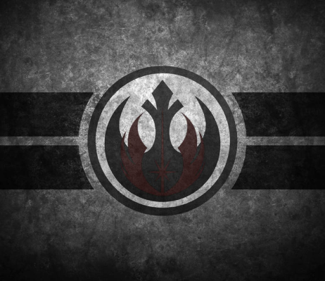
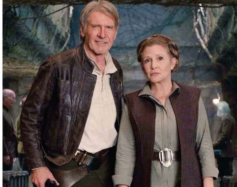

QUAL SÃO OS REBELDES?!
OOs Rebeldes em Star Wars são um grupo de combatentes que se opõem ao Império Galáctico, buscando restaurar a liberdade e a justiça na galáxia. Eles são formados por uma coalizão de planetas e indivíduos que se unem para combater a tirania e a opressão do Império. Os Rebeldes são liderados pela Aliança Rebelde, que é uma organização militar secreta que opera a partir de bases secretas em toda a galáxia. Eles usam táticas de guerrilha para atacar o Império, sabotando suas operações e recrutando novos aliados para sua causa.
QUAL SUA HISTÓRIA?!
Ao longo dos filmes de Star Wars, a luta dos Rebeldes contra o Império Galáctico é uma das histórias centrais da saga. Eles são representados como heróis corajosos que lutam pela liberdade e pelos direitos dos oprimidos. A história dos Rebeldes também é explorada em várias outras mídias, como livros, quadrinhos e jogos. Os personagens mais famosos associados aos Rebeldes incluem Luke Skywalker, Princesa Leia Organa, Han Solo e Chewbacca. Cada um deles contribuiu para a causa Rebelde de maneiras diferentes, com habilidades e perspectivas únicas.
